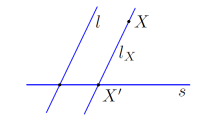
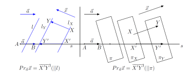

Lõiku, millel on fikseeritud alguspunkt, s.t suund, nimetatakse
\(\bold{suunatud}\) \(\bold{lõiguks}\) ehk \(\bold{seotud}\)
\(\bold{vektoriks}\). Seotud vektorit alguspunktiga X ja lõpp-punktiga
Y tähistatakse edaspidi \(\overline{XY}\).
Seotud vektori \(\overline{XY}\) pikkuseks \(\overline{|XY|}\)
nimetatakse teda määrava lõigu XY pikkust.
Seotud vektorit \(\overline{YX}\) nimetatakse seotud vektori
\(\overline{XY}\) \(\bold{vastandvektoriks}\), mida tähistame
−\(\overline{XY}\) , s.o −\(\overline{XY}\) = \(\overline{YX}\).
Seotud vektorit \(\overline{AB}\) nimetatakse
\(\bold{kollineaarseteks}\) seotud vektoriga \(\overline{CD}\), kui
lõik \(\overline{AB}\) on paralleelne lõiguga CD (või lõigud AB ja CD
asuvad ühel ja samal sirgel, sealhulgas ühtivad). Öeldut tähistatakse
\(\overline{AB}\) ∥ \(\overline{CD}\) ning kui vektorid ei ole
kollineaarsed, siis \(\overline{AB}\) ∦ \(\overline{CD}\).
Seotud vektorit \(\overline{AB}\) nimetatakse
\(\bold{samasuunaliseks}\) (vastassuunaliseks) seotud vektoriga
\(\overline{CD}\), kui \(\overline{AB}\) ∥ \(\overline{CD}\) ja suunad
on ühesugused (suunad on vastupidised). Samasuunalisust tähistatakse
\(\overline{AB}\) ↑↑ \(\overline{CD}\) ja vastassuunalisust
\(\overline{AB}\) ↑↓ \(\overline{CD}\)
Seotud vektorit \(\overline{AB}\) nimetatakse \(\bold{ekvivaltseks}\)
seotud vektoriga \(\overline{AB}\), kui |\(\overline{AB}\)| =
|\(\overline{AB}\)| ja \(\overline{AB}\) ↑↑ \(\overline{CD}\). Seda
tähistatakse \(\overline{AB}\) ∼ \(\overline{CD}\).
Seotud vektoriga \(\overline{AB}\) ekvivalentsete seotud vektorite
hulka {\(\overline{XY}\) | \(\overline{XY}\) ∼ \(\overline{XY}\)}
nimetatakse \(\bold{ekvivalentsiklassiks}\) \(\bold{moodustajaga}\)
\(\overline{AB}\). Viimast tähistatakse \(\bold{AB}\). Seega
\(\bold{AB}\) = {\(\overline{XY}\) | \(\overline{XY}\) ∼
\(\overline{AB}\)}.
Tähistame E1 = {\(\bold{XY}\) | \(\overline{XY}\) ∈
\(\overline{E1}\)}, E2 = {\(\bold{XY}\) | \(\overline{XY}\) ∈
\(\overline{E2}\)} ja E3 = {\(\bold{XY}\) | \(\overline{XY}\) ∈
\(\overline{E3}\)} vastavalt kõiki sirge E1, tasandi E2 ja ruumi E3
poolt moodustatud ekvivalentsiklasse ja nimetatame nende elemente
\(\bold{vabavektoriteks}\). Ühine tähis vabavektorite vektorruumi
jaoks olgu E.
Vabavektori \(\bold{x}\)= \(\bold{AB}\) ∈ E
\(\bold{vastaandvektoriks}\) nimetatakse vabavektorit −\(\bold{x}\) =
\(\bold{BA}\) ∈ E.
Vabavektoreid \(\bold{x}\), \(\bold{y}\) ∈ E nimetatakse
\(\bold{kollineaarseteks}\) , kui nende vektorite moodustajad on
kollineaarsed ehk \(\overline{AB}\) ∥ \(\overline{A′B′}\) , kui
\(\overline{AB}\) ∈ \(\bold{x}\) ja \(\overline{A′B′}\) ∈
\(\bold{y}\), ning seda tähistatakse \(\bold{x}\) ∥ \(\bold{y}\).
Vabavektoreid \(\bold{x}\), \(\bold{y}\) ∈ E nimetatakse
\(\bold{samasuunalisteks}\) (vastassuunalisteks), kui nende vektorite
moodustajad on samasuunalised (vastassuunalised) ehk \(\overline{AB}\)
↑↑ \(\overline{A′B′}\) (\(\overline{AB}\) ↑↓ \(\overline{A′B′}\)).
Seda tähistatakse \(\bold{x}\) ↑↑ \(\bold{y}\) (\(\bold{x}\) ↑↓
\(\bold{y}\)).
Punkti X′ nimetatakse punkti X \(\bold{projektsiooniks}\)
\(\bold{sirgele}\) s \(\bold{paralleelselt}\) \(\bold{sirgega}\) l.

Vektorit \(\bold{X′Y′}\) nimetatakse vektori x
\(\bold{projektsioonivektoriks}\) vektori a sihile paralleelselt
sirgega l (tasandiga π). Vektorit \(\bold{X′Y′}\) tähistatakse
\(\bold{Pr}\)\(\tiny{a}\)\(\bold{x}\).

Mistahes punkti X ∈ E \(\bold{kohavektoriks}\) nimetatakse vektorit
\(\bold{OX}\) ∈ E.
Fikseeritud n ∈ N korral nimetatakse hulka
\(\R^n\) = {(x\(\tiny{1}\), . . . , x\(\tiny{n}\)| x\(\tiny{1}\), . .
. , x\(\tiny{n}\) ∈ \(\R^n\)}
n-\(\bold{mõõtmeliseks}\) (\(\bold{eukleidiliseks}\))
\(\bold{vektorruumiks}\), milles on defineeritud liitmine
\(\bold{x}\) + \(\bold{y}\) = (x\(\tiny{1}\) + y\(\tiny{1}\), . . . ,
x\(\tiny{n}\) + y\(\tiny{n}\)), \(\bold{x}\), \(\bold{y}\) ∈ \(\R^n\)
ja skalaariga korrutamine
α\(\bold{x}\) = (αx\(\tiny{1}\), . . . , αx\(\tiny{n}\)),
\(\bold{x}\)∈ \(\R^n\), α ∈ \(\R\).
Vektorite süsteemi e\(\tiny{1}\), . . . , e\(\tiny{n}\) ∈ \(\R^n\),
kus
e\(\tiny{1}\) = (1, 0, 0, . . . , 0),
e\(\tiny{2}\) = (0, 1, 0, . . . , 0),
.
.
.
e\(\tiny{n}\) = (0, . . . , 0, 1)
nimetatakse vektorruumi \(\R^n\) \(\bold{loomulikuks}\)
\(\bold{baasiks}\).
Vektori \(\bold{x}\) ∈ \(\R^n\) pikkus |\(\bold{x}\)| defineeritakse
võrdusega |\(\bold{x}\)| = \(\sqrt{x^2_1 + ... + x^2_n}\)
Olgu antud nullvektorist erinevad vektorid x, y ∈ E. Võtame vektori x
kui vabavektori ühe esindaja \(\overline{AB}\), samuti vabavektori y
esindaja \(\overline{AC}\). Vektorite x ja y \(\bold{vaheliseks}\)
\(\bold{nurgaks}\) nimetatakse nurka, mis tekib lõigu AB pööramisel
lühemat teed pidi lõiguga AC samasse suunda. Seda nurka tähistame ∠(x,
y), siis ∠(x, y) ∈ [0, π]
Vektorite a, b ∈ E \(\bold{skalaarkorrutiseks}\) nimetatakse
reaalarvu, mis võrdub nende vektorite pikkuste ja nendevahelise nurga
koosinuse korrutisega, s.t ⟨a, b⟩ = |a||b| cos ∠(a, b).
Vektorite a, b ∈ E3 \(\bold{vektorkorrutiseks}\) nimetatakse vektorit
a × b,mis rahuldab järgmist kolme tingimust:
1. |a × b| = |a||b|sin ∠(a, b),
2. a × b ⊥ a ja a × b ⊥ b, s.t a ja b on risti vektoriga a × b,
3. {a, b, a × b} on parema käe kolmik
Vektorite a, b, c ∈ E3 \(\bold{segakorrutiseks}\) nimetatakse arvu
abc = ⟨a × b, c⟩.
Kolme vektori segakorrutise absoluutväärtus võrdub neile vektoritele
ehitatud rööptahuka ruumalaga,
V\(\tiny{rt}\) = |abc|.
Kolmele vektorile ehitatud tetraeedri ruumala on
V\(\tiny{te}\)=\(\frac{1}{6}\)|abc|